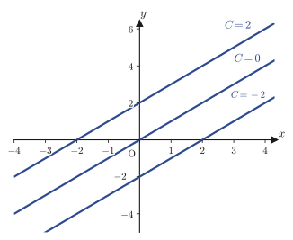
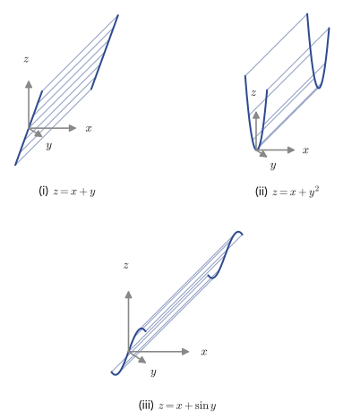
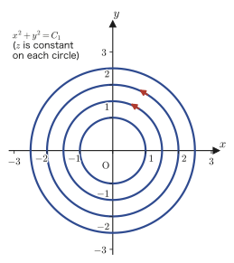
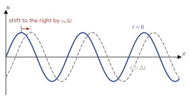

Chapter 42Introduction to Partial Differential Equations and Lagrange's First-Order Partial Differential Equation
From Chapter 33 through Chapter 41 we have studied ordinary differential equations (differential equations in which the unknown function is a function of just one variable). Beginning with this chapter, we at last move on to partial differential equations (PDEs for short), in which the unknown function is a function of two or more variables. Partial differential equations are the language that describes almost all phenomena in nature, from the vibration of a string, the way heat propagates, and electromagnetic waves, to the wave function of quantum mechanics. From Chapter 43 onward we will go on to the wave equation, the heat equation, and the Schrödinger equation, but in this chapter, as a warm-up, we first learn how a partial differential equation differs in essence from an ordinary differential equation, and how to solve the most basic “first-order” partial differential equation (Lagrange's partial differential equation).
The general solution of an ordinary differential equation carries arbitrary constants, whereas the general solution of a partial differential equation carries an arbitrary function—that one point is the whole story, but let us begin by getting a feel, through concrete examples and graphs, for just how extraordinary it is to have “a whole function's worth of freedom.” After that, we learn how to solve the first-order partial differential equation $P z_x+Q z_y=R$, which bears the name of Lagrange, by using the geometric picture of tangent planes to surfaces in three-dimensional space. Finally, we assemble the complete set of tools that will serve as the foundation of Part IX: total differential equations and exact differential equations, and the “partial differential equation for traveling waves,” which describes the phenomenon of a wave propagating.
- The difference between the “arbitrary constants” attached to solutions of ordinary differential equations and the “arbitrary functions” attached to solutions of partial differential equations (with concrete examples and graphs)
- The strategy of imposing initial and boundary conditions to select a particular solution from the general solution
- Lagrange's partial differential equation $Pz_x+Qz_y=R$ and its solution by means of the characteristic equations $\dfrac{dx}{P}=\dfrac{dy}{Q}=\dfrac{dz}{R}$
- Deriving the characteristic equations themselves from the geometric picture of the normal vector to the tangent plane of the solution surface (why this method of solution is correct)
- Lagrange's partial differential equation generalized to functions of $n$ variables, and a worked example with a boundary condition
- Total differential equations and exact differential equations (in two and three variables), and their relation to the gradient and the curl ($\rot$)
- The partial differential equation $\pdiff{u}{t}=\mp v_0\pdiff{u}{x}$ representing a traveling wave, and the wave equation derived from it
Source notes: Yasuhide Mochizuki, Mathematics Notes: Partial Differential Equations, pp. 1–10.
42.1 What Is a Partial Differential Equation? — The Appearance of Arbitrary Functions
An ordinary differential equation (ODE), which we studied in Chapter 33, is a differential equation whose unknown function is a function of only one variable, such as $x$. As the simplest example, consider
$$ \diff{y}{x}=1 $$Integrating both sides with respect to $x$, we find that the solution is
\begin{equation} y=x+C \label{eq:42-ode-const} \end{equation}Here $C$ is an arbitrary constant (the constant of integration), and no matter how we choose the value of $C$, $y=x+C$ satisfies the original equation. If we replace $C$ by various values, we obtain a “family of lines,” as in Figure 42.1: straight lines of slope 1 that are translated up and down in parallel. The picture of the solutions of an ordinary differential equation is, in this way, very easy to grasp.

In contrast, a differential equation whose unknown function is a function of two or more variables is called a partial differential equation (PDE). For example, let the unknown function be $z=z(x,y)$ (a function of the two variables $x,y$), and consider the following equation.
$$ \pdiff zx=1 $$This means “when $z$ is partially differentiated with respect to $x$, the result is $1$ (but nothing is specified about how $y$ enters).” If we fix $y$ and integrate with respect to $x$, we get $z=x+(\text{a quantity independent of $x$})$, but this “quantity independent of $x$” can be any function of $y$ whatsoever. That is, the solution is
\begin{equation} z=x+f(y) \label{eq:42-pde-arbfunc} \end{equation}where $f$ can be chosen to be any function whatsoever (indeed, $\pdiff{}{x}\{x+f(y)\}=1+0=1$, so we can confirm that the equation is satisfied regardless of what $f$ is). Here lies the decisive difference from ordinary differential equations—the general solution of an ordinary differential equation carried just a single arbitrary constant $C$, whereas the general solution of a partial differential equation comes with an entire arbitrary function $f$.
Intuition: An entire function's worth of freedom
To get a feel for what it means that “an arbitrary function appears,” let us look at actual graphs. If $f(y)=y$, then $z=x+y$, whose graph is a plane (Figure 42.2(i)). But if $f(y)=y^2$, then $z=x+y^2$, a surface shaped like a trough, curving up parabolically in the $y$ direction (Figure 42.2(ii)). Although we impose the same condition, “$\pdiff zx=1$ is satisfied,” the shape of the graph becomes completely different merely through the choice of $f$. If we choose $f(y)=\sin y$, we get, this time, a surface that undulates in the $y$ direction (Figure 42.2(iii)). Whereas the solution of an ordinary differential equation had only the freedom of choosing “a single point on a number line (that is, the constant $C$),” the solution of a partial differential equation has the freedom of choosing “an entire graph with $y$ on the horizontal axis (that is, the function $f$)”—this is the reason why the variety of solutions of a partial differential equation is far greater than that of an ordinary differential equation.

Math Note: Checking with spreadsheet software (p. 2)
On p. 2 of the original notes, figures of these three surfaces actually drawn on a computer (with the 3D graph function of spreadsheet software) are pasted in. Formulas using cell references—=$A2+B$1 ($z=x+y$), =$A2+B$1^2 ($z=x+y^2$), and =$A2+SIN(B$1) ($z=x+\sin y$)—are annotated by hand, and from them we can tell that the values of $x$ were placed in column A and the values of $y$ in row 1, and the computation was carried out over a grid. The notes themselves confirm that the hand-drawn Figure 42.2 and this computer-generated figure show the same shapes.
Thus, because an arbitrary function appears in the general solution of a partial differential equation, the form of the solution is infinitely varied when there are no constraints. So when we actually solve a partial differential equation, we impose additional conditions requiring the unknown function to take certain values, and thereby fix the contents of the arbitrary function to be a particular function. A solution in which the arbitrary function has been fixed by conditions is called a particular solution. In contrast to the general solution (the broadest class of solutions, containing an arbitrary function), a particular solution is “the one chosen from among them that fits the actual problem setting.”
Caution: Initial conditions and boundary conditions
The additional conditions imposed in order to fix the contents of the arbitrary function are called initial conditions (often conditions concerning time) or boundary conditions (often conditions at the boundary of space). For the wave equation and the heat equation treated from Chapter 43 onward as well, we will use this strategy of “general solution + initial and boundary conditions = particular solution” repeatedly.
Example 42.1: How the solution changes with the contents of the arbitrary function
Verify that the solutions of the partial differential equation $\pdiff zx=2x$ can be written in the form $z=x^2+f(y)$ ($f$ an arbitrary function). Then, for (a) the case $f(y)=y$ and (b) the case $f(y)=\cos y$, confirm in each case that the equation is actually satisfied.
Solution. First we verify the form of the general solution. If $z=x^2+f(y)$, then since $f(y)$ does not contain $x$, it vanishes upon partial differentiation with respect to $x$, and
$$ \pdiff zx=\pdiff{}{x}\bigl(x^2+f(y)\bigr)=2x+0=2x $$so the original equation is indeed satisfied regardless of what $f$ is. That is, $z=x^2+f(y)$ is a general solution, with $f$ an arbitrary function.
(a) For $f(y)=y$, we have $z=x^2+y$. Then $\pdiff zx=2x$, so the equation is satisfied.
(b) For $f(y)=\cos y$, we have $z=x^2+\cos y$. Since $\cos y$ does not contain $x$, again $\pdiff zx=2x+0=2x$, and the equation is satisfied.
Although (a) and (b) are both solutions of the same partial differential equation $\pdiff zx=2x$, their shapes in the $y$ direction are completely different: a “line of slope 1” and a “cosine curve.” The situation we saw in Figure 42.2 is repeated here. If $z(x,0)=x^2+1$ were given as a boundary condition, then (a) would be ruled out since $f(0)=0\ne1$, while (b) satisfies the condition since $f(0)=\cos0=1$, so the boundary condition selects (b) (SymPy check: in both cases, $\partial z/\partial x=2x$ was confirmed).
42.2 Lagrange's First-Order Partial Differential Equation and the Characteristic Equations
42.2.1 Lagrange's partial differential equation and its solution method
Definition 42.1: Lagrange's partial differential equation
The first-order partial differential equation for the unknown function $z=z(x,y)$ with coefficients $P,Q,R$ that are functions of $x,y,z$,
\begin{equation} P(x,y,z)\pdiff zx+Q(x,y,z)\pdiff zy=R(x,y,z) \label{eq:42-lagrange-pde} \end{equation}is called Lagrange's partial differential equation. The functions $P,Q,R$ may themselves contain $z$ (the distinguishing feature is that the equation is of degree one (linear) in $\pdiff zx,\pdiff zy$, and such an equation is called quasi-linear (meaning “linear in the first-order partial derivatives of $z$, but not necessarily linear in $z$ itself”). Since $P,Q,R$ themselves may contain $z$ freely, the equation as a whole may be nonlinear in $z$—indeed, in Illustration 42.2 in Section 42.3.2, $x\pdiff ux+y\pdiff uy=-u^2$, we have $R=-u^2$, which is clearly nonlinear in $u$).
Theorem 42.1: Solution by the characteristic equations
To solve Lagrange's partial differential equation \eqref{eq:42-lagrange-pde}, it suffices to solve the system of simultaneous ordinary differential equations in the variables $x,y,z$
\begin{equation} \frac{dx}{P}=\frac{dy}{Q}=\frac{dz}{R} \label{eq:42-characteristic} \end{equation}(these are called the characteristic equations or auxiliary equations of Eq. \eqref{eq:42-lagrange-pde}). Suppose that, from the characteristic equations, we have obtained two mutually independent solutions
$$ \varphi(x,y,z)=C_1,\qquad \psi(x,y,z)=C_2 $$(where $C_1,C_2$ are constants of integration). Then the general solution of the original partial differential equation \eqref{eq:42-lagrange-pde} is given in the form
\begin{equation} \psi=f(\varphi)\quad\text{that is}\quad g(\varphi,\psi)=0 \label{eq:42-general-sol} \end{equation}Here $f,g$ are arbitrary functions (why the solution takes this form is proved in Sections 42.2.3 and 42.2.4).
Let us see how to use this theorem with the worked example in the original notes.
Illustration 42.1: Solving $x\pdiff zx-y\pdiff zy=z$
Solve Lagrange's partial differential equation $x\pdiff zx-y\pdiff zy=z$.
Solution. This is the case $P=x$, $Q=-y$, $R=z$ of Eq. \eqref{eq:42-lagrange-pde}. The characteristic equations \eqref{eq:42-characteristic} read
$$ \frac{dx}{x}=\frac{dy}{-y}=\frac{dz}{z} $$Since the three fractions are equal, we first take the first two of them.
$$ \text{[i]}\quad\frac{dx}{x}=\frac{dy}{-y} $$This is a separable ordinary differential equation (Chapter 33). Integrating both sides (the left side is an integral with respect to $x$ and the right side an integral with respect to $-y$, each an integral of $1/(\text{variable})$ and hence a logarithm), we obtain
$$ \ln|x|=-\ln|y|+C_1' $$Adding $\ln|y|$ to both sides gives $\ln|x|+\ln|y|=\ln|xy|=C_1'$, so
$$ \ln|xy|=C_1' \qquad\therefore\ xy=C_1\quad(C_1=\pm e^{C_1'}) $$($C_1'$ is a constant of integration, and $C_1=\pm e^{C_1'}$ may be regarded as a constant that can take any value other than $0$). Next, we take the first and the last fractions.
$$ \text{[ii]}\quad\frac{dx}{x}=\frac{dz}{z} $$This can be integrated in the same way, giving
$$ \ln|z|=\ln|x|+C_2' \qquad\therefore\ \ln\left|\frac{z}{x}\right|=C_2' \qquad\therefore\ \frac{z}{x}=C_2\quad(C_2=\pm e^{C_2'}) $$From [i] and [ii] we have obtained two independent first integrals, $\varphi=xy$ and $\psi=z/x$ (a first integral is a conserved quantity, obtained by solving the characteristic equations (ordinary differential equations), whose value does not change along the solutions of the characteristic equations. It is called a first integral because it is a relation obtained by “integrating” the ordinary differential equation once). By Theorem 42.1, the general solution has the form $\psi=f(\varphi)$, that is,
$$ \frac{z}{x}=f(xy) $$so that
\begin{equation} \therefore\ z=xf(xy)\qquad(f\text{ is an arbitrary function}) \label{eq:42-example1-sol} \end{equation}is the general solution.
Cross-check. Let us verify concretely, by choosing a specific $f$, that the general solution is really correct. Take $f(t)=\sin^2t$; then $f(xy)=\sin^2(xy)$, so $z=x\sin^2(xy)$. Differentiating partially with the product rule and the chain rule (Chapters 1 and 2), we get
$$ \pdiff zx=\sin^2(xy)+x\cdot2\sin(xy)\cos(xy)\cdot y=\sin^2(xy)+2xy\sin(xy)\cos(xy) $$(The first term comes from differentiating the factor “$x$,” and the second from differentiating $\sin^2(xy)$ with respect to $x$. Note that $\pdiff{}{x}\sin^2(xy)=2\sin(xy)\cos(xy)\cdot\pdiff{}{x}(xy)=2\sin(xy)\cos(xy)\cdot y$.) Also,
$$ \pdiff zy=x\cdot2\sin(xy)\cos(xy)\cdot x=2x^2\sin(xy)\cos(xy) $$(This time we differentiate $z=x\sin^2(xy)$ partially with respect to $y$, so $x$ is treated as a constant, and $\pdiff{}{y}\sin^2(xy)=2\sin(xy)\cos(xy)\cdot x$). Substituting these into the left-hand side $x\pdiff zx-y\pdiff zy$, we obtain
$$ x\pdiff zx-y\pdiff zy=x\sin^2(xy)+2x^2y\sin(xy)\cos(xy)-2x^2y\sin(xy)\cos(xy) $$The second and third terms are both $2x^2y\sin(xy)\cos(xy)$ with opposite signs, so they cancel each other, and
$$ =x\sin^2(xy)=z $$Thus the function indeed satisfies the original equation $x\pdiff zx-y\pdiff zy=z$ (verified with SymPy).
42.2.2 Why can it be solved with the characteristic equations? — From the tangent plane of the solution surface
If the solution method of Theorem 42.1 is handed to us out of the blue, it is hard to see “why we may form the relation $dx/P=dy/Q=dz/R$.” So let us picture the surface represented by the solution $z=z(x,y)$ in three-dimensional space and derive the characteristic equations themselves, using the geometric tool of the normal vector to the tangent plane. This proof uses the cross product (also called the vector product), which is not studied in high school, so we first review the cross product briefly.
Math Note: Definition of the cross product
For two three-dimensional vectors $\bm a=(a_1,a_2,a_3)$ and $\bm b=(b_1,b_2,b_3)$, we define the cross product $\bm b\times\bm a$ by the following formula (note that, whereas the inner product $\bm a\cdot\bm b$ is a scalar, the result of the cross product is a vector).
$$ \bm b\times\bm a=(b_2a_3-b_3a_2,\ b_3a_1-b_1a_3,\ b_1a_2-b_2a_1) $$For example, if $\bm b=(0,1,2)$ and $\bm a=(1,0,-3)$, then $\bm b\times\bm a=(1\cdot(-3)-2\cdot0,\ 2\cdot1-0\cdot(-3),\ 0\cdot0-1\cdot1)=(-3,\,2,\,-1)$. The cross product $\bm b\times\bm a$ has the important property of being perpendicular to both $\bm a$ and $\bm b$ (taking the inner product with each of $\bm a,\bm b$ gives $0$). Indeed, computing in components in general, we have
$$ \bm a\cdot(\bm b\times\bm a)=a_1(b_2a_3-b_3a_2)+a_2(b_3a_1-b_1a_3)+a_3(b_1a_2-b_2a_1)=0 $$(when expanded, all the terms cancel in pairs with opposite signs), and similarly $\bm b\cdot(\bm b\times\bm a)=0$. That is, if there is a plane spanned by $\bm a,\bm b$ (a plane containing the two vectors), then $\bm b\times\bm a$ is a vector perpendicular to that plane—a normal vector. This is why we use the cross product to build a normal vector in $xyz$-space from two basic vectors in the $xy$-plane. The detailed properties of the cross product (that its magnitude equals the area of a parallelogram, its relation to right-handed systems, and so on) are treated in Chapter 15.
Proof of Theorem 42.1 (1): The normal vector to the tangent plane
A solution $z=z(x,y)$ of Lagrange's partial differential equation \eqref{eq:42-lagrange-pde} represents a smooth surface in the $xyz$ coordinate system. Let us consider the tangent plane at a point $A(x,y,z)$ on this surface.
On the smooth surface $z=z(x,y)$, the displacement vector for a small movement from the point $A$ in the $x$ direction can be written $\bigl[dx,\ 0,\ \pdiff zx\,dx\bigr]$, and that for a small movement in the $y$ direction can be written $\bigl[0,\ dy,\ \pdiff zy\,dy\bigr]$ (the $z$ component is the change $\pdiff zx\,dx$ in $z$ when $x$ changes by $dx$, and the change $\pdiff zy\,dy$ when $y$ changes by $dy$). Formally dividing these by $dx,dy$, respectively, we obtain the vectors
$$ \bm a=\left[1,\ 0,\ \pdiff zx\right],\qquad \bm b=\left[0,\ 1,\ \pdiff zy\right] $$Then $\bm a,\bm b$ are vectors on the tangent plane at the point $A$ (in the $x$ direction and the $y$ direction, respectively). Therefore a vector (normal vector) $\bm n$ perpendicular to the tangent plane spanned by $\bm a,\bm b$ can be expressed with the cross product as $\bm n=\bm b\times\bm a$. Computing the components explicitly, we get
$$ \bm n=\bm b\times\bm a=\left(1\cdot\pdiff zx-\pdiff zy\cdot0,\ \ \pdiff zy\cdot1-0\cdot\pdiff zx,\ \ 0\cdot0-1\cdot1\right)=\left[\pdiff zx,\ \pdiff zy,\ -1\right] $$That is, at the point $A(x,y,z)$ on the surface $z=z(x,y)$, the vector
\begin{equation} \bm n=\left[\pdiff zx,\ \pdiff zy,\ -1\right] \label{eq:42-normal-vector} \end{equation}is a normal vector to the tangent plane.
Another viewpoint: The normal vector is also a gradient vector
Let us look at the surface $z=z(x,y)$ in the form of the implicit function $F(x,y,z)=z(x,y)-z=0$ (a function written as a relation among $x,y,z$ in the form $=0$). If we compute the gradient of $F$ ($\grad F=\left[\pdiff Fx,\pdiff Fy,\pdiff Fz\right]$, the vector, studied in Chapter 6, that lists “how much it increases in each direction”), we get
$$ \grad F=\left[\pdiff{}{x}\bigl(z(x,y)-z\bigr),\ \pdiff{}{y}\bigl(z(x,y)-z\bigr),\ \pdiff{}{z}\bigl(z(x,y)-z\bigr)\right]=\left[\pdiff zx,\ \pdiff zy,\ -1\right]=\bm n $$which coincides exactly with the normal vector \eqref{eq:42-normal-vector}. This is no coincidence—in general, when a surface is expressed in the implicit form $F(x,y,z)=0$, its gradient vector $\grad F$ is always a normal vector perpendicular to the surface (the reason is that the gradient vector points in “the direction in which the value of $F$ increases most steeply,” but on the surface (on the surface $F=0$) the value of $F$ does not change whichever way we move; that is, the gradient vector is orthogonal to every tangent vector on the surface). Remember that there are two ways to find a normal vector (the method using the cross product and the method using the gradient).
Proof of Theorem 42.1 (2): $\bm n\perp d\bm\ell$ and the derivation of the characteristic equations
Now consider the vector formed by lining up the coefficients of Eq. \eqref{eq:42-lagrange-pde},
$$ d\bm\ell=[P(x,y,z),\ Q(x,y,z),\ R(x,y,z)] $$Computing its inner product with the normal vector in Eq. \eqref{eq:42-normal-vector}, we find that Lagrange's partial differential equation \eqref{eq:42-lagrange-pde} itself shows up in the form
$$ \bm n\cdot d\bm\ell=\pdiff zx\,P+\pdiff zy\,Q-R=0 $$(we have merely rewritten Eq. \eqref{eq:42-lagrange-pde} as $P\pdiff zx+Q\pdiff zy-R=0$). In other words, we have
$$ \therefore\ \bm n\perp d\bm\ell $$Now, $\bm n$ was a vector perpendicular to the tangent plane at the point $A$. Therefore we see that $d\bm\ell$, which is perpendicular to $\bm n$, is a vector lying in the tangent plane. This is the geometric meaning of Lagrange's partial differential equation \eqref{eq:42-lagrange-pde}—“the direction of $d\bm\ell=(P,Q,R)$ lies in the tangent plane of the solution surface.”
42.2.3 Why can it be solved with the characteristic equations? (3) — Deriving $d\bm\ell$ as the tangent vector of the curve of intersection
In Proof (2) we found that the direction vector $d\bm\ell=(P,Q,R)$ lies in the tangent plane at the point $A$ of the solution surface $z(x,y)$. However, this alone still does not produce the characteristic equations $dx/P=dy/Q=dz/R$ themselves. This is because the tangent plane is a “plane” with two-dimensional extent, so merely knowing that “the direction of $d\bm\ell$ lies in the tangent plane” does not determine which specific curve in the tangent plane has $d\bm\ell$ as its tangent. So let $\alpha$ be the plane that passes through the point $A$, contains the direction $d\bm\ell$, and is parallel to the $z$-axis. The plane $\alpha$ is like a “vertical wall”: it is obtained by simply extruding, in the direction of the $z$-axis, the straight line that extends from the point $(x,y)$ in the $xy$-plane in the direction $(P,Q)$.
Proof of Theorem 42.1 (3): Parametrizing the curve of intersection and deriving the characteristic equations
If we superimpose the plane $\alpha$ and the solution surface $z=z(x,y)$ (that is, solve their equations simultaneously), we obtain a single curve (the curve of intersection); see Figure 42.5, which corresponds to Figure 2.3 in the original notes. Using a parameter $t$, we express this curve of intersection as
$$ \bm P(t)=[x(t),\ y(t),\ z(t)] $$The curve of intersection has the following two properties.
- (i) Since the curve of intersection lies on the solution surface $z=z(x,y)$, its tangent vector $\dot{\bm P}=[\dot x,\dot y,\dot z]$ (where $\dot{}=d/dt$) lies in the tangent plane at the point $A$. (The velocity vector of a curve crawling along a surface always stays within the tangent plane of that surface—this is a general fact: since the velocity vector is the limit of “very small displacements along the surface,” it has no way of sticking out of the surface.)
- (ii) Since the curve of intersection lies in the plane $\alpha$, its tangent vector $\dot{\bm P}$ also lies in the plane $\alpha$.
That is, $\dot{\bm P}$ is a vector contained in both the tangent plane and the plane $\alpha$. Now, when two (distinct) planes meet in $xyz$-space, their common part is a single straight line—this is a basic property of solid figures that is also studied in high school. The tangent plane and the plane $\alpha$ likewise share a single straight line through the point $A$, and $\dot{\bm P}$ must point along the direction of that line.
On the other hand, the direction vector $d\bm\ell=(P,Q,R)$ also lies in the tangent plane by Proof (2), and, by the very definition of $\alpha$ (the plane $\alpha$ was constructed so as to contain the direction of $d\bm\ell$), it lies in the plane $\alpha$ as well. Therefore $d\bm\ell$ also points along the direction of the same single straight line shared by the tangent plane and the plane $\alpha$.
The tangent vector $\dot{\bm P}$ and the direction vector $d\bm\ell$ point along the same straight line—that is, the two vectors are parallel (apart from the difference in length). So, letting $k$ be the constant of proportionality (which in general may vary with $t$), we can write
\begin{equation} \dot{\bm P}=k\,d\bm\ell \qquad(k\in\R) \label{eq:42-tangent-parallel} \end{equation}Writing this out component by component, we get
$$ \begin{cases} \dfrac{dx}{dt}=kP(x,y,z)\\[4pt] \dfrac{dy}{dt}=kQ(x,y,z)\\[4pt] \dfrac{dz}{dt}=kR(x,y,z) \end{cases} $$Dividing both sides of each equation by the corresponding one of $P,Q,R$ on the right-hand side and then rearranging into the form with $dt$ (for example, the first equation can be rewritten as $\dfrac{dx}{P}=k\,dt$), we see that all three equations are equal to the same quantity $k\,dt$.
\begin{equation} \frac{dx}{P}=\frac{dy}{Q}=\frac{dz}{R}\ \bigl(=k\,dt\bigr) \label{eq:42-characteristic-derived} \end{equation}These are precisely the characteristic equations \eqref{eq:42-characteristic} of Theorem 42.1. In other words, the characteristic equations are the equations expressing the direction of the tangent to the curve (the curve of intersection) that lies on the solution surface and also lies in the plane $\alpha$ formed by extruding the direction $d\bm\ell$ through the point $A$; and the collection of these curves of intersection over all points $A$ on the solution surface is none other than the solution curves of the characteristic equations—the characteristic curves.
42.2.4 Why does the general solution take the form $\psi=f(\varphi)$? — Collecting the curves of intersection to build the solution surface
Suppose that by solving the characteristic equations \eqref{eq:42-characteristic} we have obtained two independent first integrals (conserved quantities obtained by integration) $\varphi(x,y,z)=C_1$ and $\psi(x,y,z)=C_2$. The equation $\varphi(x,y,z)=C_1$ represents (for each fixed value of $C_1$) one surface in $xyz$-space (the level surface of $\varphi$, meaning “the set of points at which the function takes the same value”). Similarly, $\psi(x,y,z)=C_2$ also represents one surface.
If we superimpose these two surfaces (that is, solve their equations simultaneously), the set where two surfaces (each with two-dimensional extent) meet is in general a single curve (one-dimensional). In fact, this curve of intersection is precisely the characteristic curve studied in Section 42.2.3 (since $\varphi,\psi$ are both conserved quantities whose values do not change along solutions of the characteristic equations, the set of points satisfying $\varphi=C_1$ and $\psi=C_2$ coincides with a single solution curve of the characteristic equations).
Intuition: Collecting curves of intersection to build the solution surface
The left panel of Figure 42.6 shows two surfaces, $\varphi(x,y,z)=C_1$ (a mountain-shaped surface) and $\psi(x,y,z)=C_2$ (a tilted plane), meeting along a single curve of intersection (red, a characteristic curve). If we vary the values of $C_1,C_2$ in various ways, we obtain a different characteristic curve each time (right panel of Figure 42.6: the curves of intersection when $C_1$ is varied over three values). The solution surface $z(x,y)$ is the two-dimensional surface formed by laying out (collecting) the infinitely many characteristic curves obtained in this way, packed together without any gaps in $xyz$-space.
What is important here is that if we move $C_1$ and $C_2$ completely freely, both independently, the characteristic curves fill up $xyz$-space without any gaps. A single curve has only one degree of freedom, one parameter (the position along the curve), whereas if we move both of $(C_1,C_2)$ freely, the curves are labeled by “two parameters,” and what we obtain is not a two-dimensional surface but a three-dimensional solid (a region of $xyz$-space). To build exactly one surface, we must label the characteristic curves by just one parameter.
To do so, we must impose a relation under which fixing one value of $C_1$ determines exactly one value of $C_2$, that is, a relation $C_2=f(C_1)$ ($f$ is an arbitrary function). If we move only $C_1$ under this relation, the characteristic curves line up one by one without gaps and sweep out exactly one surface. This is the reason why the general solution has the form
$$ \psi=f(\varphi)\qquad\text{that is,}\qquad g(\varphi,\psi)=0 $$in which $\varphi$ and $\psi$ are connected by some functional relation ($f$ and $g$ are arbitrary functions). Conversely, the choice of $f$ (or $g$) is completely free, and each choice gives a different solution surface. This is precisely the geometric explanation, in terms of characteristic curves, of the fact seen in Section 42.1 that “the general solution of a partial differential equation carries a whole arbitrary function.”
42.2.5 Using the characteristic equations in practice — examples with constant coefficients and boundary conditions
Let us leave the proof of Theorem 42.1 here and practice actually solving the characteristic equations with two more problems.
Example 42.2: Solving $y\pdiff zx-x\pdiff zy=0$
Solve Lagrange's partial differential equation $y\pdiff zx-x\pdiff zy=0$.
Solution. This is the case of Eq. \eqref{eq:42-lagrange-pde} with $P=y$, $Q=-x$, $R=0$. The characteristic equations are
$$ \frac{dx}{y}=\frac{dy}{-x}=\frac{dz}{0} $$First, from the first two fractions, clearing the denominators gives $-x\,dx=y\,dy$, that is, $x\,dx+y\,dy=0$. Integrating both sides (the integral of $x\,dx$ is $x^2/2$ and the integral of $y\,dy$ is $y^2/2$), we obtain
$$ \frac{x^2}{2}+\frac{y^2}{2}=\frac{C_1}{2}\qquad\therefore\ x^2+y^2=C_1 $$Viewed in the $xy$-plane, this is a circle centered at the origin (Figure 42.7). On the other hand, the last fraction $dz/0$ is a notation meaning “when the denominator of a ratio is $0$, we agree that the corresponding variable (in this case $z$) does not change” (it is a convention for how to read $dz/R$ when $R=0$). That is,
$$ z=C_2 $$Thus we have obtained the two independent first integrals $\varphi=x^2+y^2$ and $\psi=z$, so by Theorem 42.1 the general solution has the form $\psi=f(\varphi)$, that is,
\begin{equation} z=f(x^2+y^2)\qquad(f\text{ is an arbitrary function}) \label{eq:42-example2-sol} \end{equation}This is the general solution.
Cross-check. Differentiating $z=f(x^2+y^2)$ partially with the differentiation formula for composite functions (the chain rule), we get $\pdiff zx=f'(x^2+y^2)\cdot2x$ and $\pdiff zy=f'(x^2+y^2)\cdot2y$, so
$$ y\pdiff zx-x\pdiff zy=2xy\,f'(x^2+y^2)-2xy\,f'(x^2+y^2)=0 $$and the original equation is indeed satisfied (verified with SymPy).

Example 42.3: Finding a particular solution by imposing a boundary condition
Solve the partial differential equation $\pdiff ux+\pdiff uy=1$ under the boundary condition $u(x,0)=x^2$.
Solution. This is the case of Eq. \eqref{eq:42-lagrange-pde} with $P=1$, $Q=1$, $R=1$ (all constants). The characteristic equations are
$$ \frac{dx}{1}=\frac{dy}{1}=\frac{du}{1} $$Integrating $dx=dy$, which comes from the first two ratios, gives $x-y=C_1$. Integrating $dx=du$, which comes from the first and last ratios, gives $x-u=C_2'$, that is, $u-x=C_2$ (we have set $C_2=-C_2'$; an integration constant remains an arbitrary constant even when its sign is changed, so we may rewrite it this way). By Theorem 42.1, the general solution is obtained by combining these into the single form $C_2=f(C_1)$, namely
$$ u-x=f(x-y)\qquad\therefore\ u(x,y)=x+f(x-y) $$Here $f$ is an arbitrary function. Substituting the boundary condition $u(x,0)=x^2$ into this, we get
$$ u(x,0)=x+f(x-0)=x+f(x)=x^2 \qquad\therefore\ f(x)=x^2-x $$This is the condition that $f$ must satisfy. In other words, $f(t)=t^2-t$ (the variable inside $f$ just happened to be written as $x$; writing it as $t$ gives the same function). Substituting this back into the general solution, we find that
$$ u(x,y)=x+f(x-y)=x+(x-y)^2-(x-y) $$is the particular solution that satisfies the boundary condition.
Cross-check. Set $s=x-y$ and regard $u=x+s^2-s$; then $\pdiff sx=1$ and $\pdiff sy=-1$, so by the chain rule (the differentiation formula for composite functions)
$$ \pdiff ux=1+(2s-1)\cdot1=2s, \qquad \pdiff uy=(2s-1)\cdot(-1)=1-2s $$Therefore
$$ \pdiff ux+\pdiff uy=2s+(1-2s)=1 $$and the equation is satisfied. Also, substituting $y=0$ into $s=x-y$ gives $s=x$, so $u(x,0)=x+x^2-x=x^2$, and the boundary condition is satisfied as well (verified with SymPy).
42.3 The Generalized Lagrange Partial Differential Equation
In Section 42.2 we treated Lagrange's partial differential equation in the case where the unknown function has two variables, $z=z(x,y)$. This idea can be generalized, with exactly the same line of thought, even when there are three or more variables. The three-dimensional geometric pictures such as tangent planes and cross products can no longer be used as they are, but the framework of the solution method—“solve the characteristic equations, find several independent first integrals, and impose a relation among them by means of an arbitrary function”—does not change.
42.3.1 Generalization to $n$ variables
Definition 42.2: The generalized Lagrange partial differential equation
Consider $n$ variables $x_1,x_2,\ldots,x_n$ and a function $u=u(x_1,x_2,\ldots,x_n)$ of them. With functions $f_1,f_2,\ldots,f_n,g$ of $x_1,\ldots,x_n,u$ as coefficients, the equation
\begin{equation} f_1\pdiff u{x_1}+f_2\pdiff u{x_2}+\cdots+f_n\pdiff u{x_n}=g \label{eq:42-general-lagrange} \end{equation}is called the generalized Lagrange partial differential equation. The case $n=2$ (two variables $x,y$) is exactly the form of Definition 42.1 treated in Section 42.2.
Theorem 42.2: Solution by the generalized characteristic equations
To solve Eq. \eqref{eq:42-general-lagrange}, it suffices to solve the characteristic equations
\begin{equation} \frac{dx_1}{f_1}=\frac{dx_2}{f_2}=\cdots=\frac{dx_n}{f_n}=\frac{du}{g} \label{eq:42-general-characteristic} \end{equation}(The discussion in Section 42.2.3 can be justified in exactly the same way if we replace three-dimensional space by the $(n+1)$-dimensional space of $x_1,\ldots,x_n,u$.) Suppose that we have thus obtained $n$ mutually independent first integrals
$$ \varphi_1(x_1,\ldots,x_n,u)=C_1,\quad \varphi_2(x_1,\ldots,x_n,u)=C_2,\quad \ldots,\quad \varphi_n(x_1,\ldots,x_n,u)=C_n $$Then the general solution of Eq. \eqref{eq:42-general-lagrange} is given in the form
\begin{equation} \Phi(\varphi_1,\varphi_2,\ldots,\varphi_n)=0 \label{eq:42-general-solution} \end{equation}Here $\Phi$ is an arbitrary function (the reason is the same as in Section 42.2.4: unless one functional relation is imposed among the $n$ conserved quantities $\varphi_1,\ldots,\varphi_n$, even gathering the characteristic curves does not produce an $(n-1)$-dimensional solution surface).
Caution: Do not confuse the letters $\Phi$ and $\varphi_i$
In the original notes, the outer arbitrary function in the formula for the general solution (the one that serves to “impose a relation”) and each first integral $\varphi_i$ are written with the same letter $\varphi$ (distinguished only by whether a subscript is present). In this book, for readability, we write the outer arbitrary function with the capital letter $\Phi$ to tell them apart. The content is the same.
42.3.2 Examples (two variables, no boundary condition)
Let us confirm how to use Theorem 42.2 in examples with $n=2$, that is, with $u=u(x,y)$.
Illustration 42.2: Solving $x\pdiff ux+y\pdiff uy=-u^2$ ($x\gt0,y\gt0$)
Solve the partial differential equation $x\pdiff ux+y\pdiff uy=-u^2$ ($x\gt0,y\gt0$).
Solution. The characteristic equations are $\dfrac{dx}{x}=\dfrac{dy}{y}=\dfrac{du}{-u^2}$.
Integrating the first two, $\dfrac{dx}{x}=\dfrac{dy}{y}$ (since both sides are integrals of “$1/(\text{variable})$,” they give logarithms), we get $\ln x=\ln y+C_1'$ (since $x,y\gt0$, absolute-value signs are unnecessary). Therefore
$$ \frac{x}{y}=e^{C_1'}=C_1 $$Next, we integrate $\dfrac{dy}{y}=-\dfrac{du}{u^2}$. The left side gives $\ln y$, and the right side gives $\displaystyle\int-\frac{du}{u^2}=\frac1u$ (the integration formula for power functions, $\int u^{-2}du=-u^{-1}$, with the sign reversed), so
$$ \ln y=\frac1u+C_2' $$Without moving $\dfrac1u$ to the other side, we simply exponentiate both sides to get $y=e^{1/u+C_2'}=e^{C_2'}e^{1/u}$, that is,
$$ y=C_2\,e^{1/u}\qquad(C_2=e^{C_2'}) $$We rewrite this in the form $C_2=ye^{-1/u}$. Now that we have obtained the two independent first integrals $C_1=x/y$ and $C_2=ye^{-1/u}$, imposing the relation $C_2=\varphi(C_1)$ ($\varphi$ is an arbitrary function) according to Theorem 42.2, we get
$$ y\,e^{-1/u}=\varphi\!\left(\frac{x}{y}\right) $$We solve this for $u$. Dividing both sides by $y$ and taking logarithms, we get $-\dfrac1u=\ln\!\dfrac{\varphi(x/y)}{y}$. Therefore
\begin{equation} u(x,y)=-\cfrac{1}{\ln\dfrac{\varphi(x/y)}{y}} \label{eq:42-example-i-main} \end{equation}is the general solution.
Alternative solution (choosing a different combination of first integrals). Of the three fractions in the characteristic equations, we are free to choose which two to pair up and integrate. This time, let us pair up the first and the last fractions, $\dfrac{dx}{x}=-\dfrac{du}{u^2}$. Integrating gives $\ln x+C_2''=\dfrac1u$. Setting $C_2''=\ln C_2$ anew ($C_2\gt0$), we have $\ln(C_2x)=\dfrac1u$, that is, $C_2x=e^{1/u}$. Again imposing the relation $C_2=\varphi(C_1)$ on this first integral and on the same $C_1=x/y$ as before, we get
\begin{equation} \frac{e^{1/u}}{x}=\varphi\!\left(\frac{x}{y}\right)\qquad\therefore\ u(x,y)=\cfrac{1}{\ln\bigl[x\,\varphi(x/y)\bigr]} \label{eq:42-example-i-alt} \end{equation}which is a general solution with a different appearance. This is not a contradiction—the reason is that, depending on which two of the three equalities in the characteristic equations we choose to pair up and integrate, the way the first integrals are combined changes, and as a result the “content” of the arbitrary function $\varphi$ changes as well. Both are general solutions of the same equation, and through the choice of $\varphi$ they ultimately represent the same family of particular solutions (verified with SymPy: both expressions satisfy $x u_x+yu_y+u^2=0$).
Illustration 42.3: Solving $-y^2\pdiff ux+xy\pdiff uy=xu$ ($x\gt0,y\gt0$)
Solve the partial differential equation $-y^2\pdiff ux+xy\pdiff uy=xu$ ($x\gt0,y\gt0$).
Solution. The characteristic equations are $\dfrac{dx}{-y^2}=\dfrac{dy}{xy}=\dfrac{du}{xu}$. From the first two, clearing the denominators gives $x\,dx=-y\,dy$ (the property of proportions: multiply the outer terms of the fractions together, and the inner terms together). Integrating both sides ($\int x\,dx=x^2/2$, $\int-y\,dy=-y^2/2$), we get
$$ \frac{x^2}{2}=-\frac{y^2}{2}+\frac{C_1}{2}\qquad\therefore\ x^2+y^2=C_1 $$Next, we look at the latter two, $\dfrac{dy}{xy}=\dfrac{du}{xu}$. Clearing the factor $x$ common to both sides gives $\dfrac{dy}{y}=\dfrac{du}{u}$, and integrating gives $\ln y+C_2'=\ln u$, that is,
$$ u=C_2\,y\qquad(C_2=e^{C_2'}) $$that is, $C_2=u/y$. Imposing the relation $C_2=\varphi(C_1)$ ($\varphi$ is an arbitrary function) on the two independent first integrals $C_1=x^2+y^2$ and $C_2=u/y$, we find that
\begin{equation} \frac uy=\varphi(x^2+y^2)\qquad\therefore\ u(x,y)=y\,\varphi(x^2+y^2) \label{eq:42-example-ii-sol} \end{equation}is the general solution.
Cross-check (following the notes' “Consideration”). If we choose $\varphi(t)=\cos t$, we get $u(x,y)=y\cos(x^2+y^2)$. Taking partial derivatives (using the product rule and the chain rule),
$$ \pdiff ux=y\cdot\bigl(-\sin(x^2+y^2)\bigr)\cdot2x=-2xy\sin(x^2+y^2) $$ $$ \pdiff uy=\cos(x^2+y^2)+y\cdot\bigl(-\sin(x^2+y^2)\bigr)\cdot2y=\cos(x^2+y^2)-2y^2\sin(x^2+y^2) $$(In the second formula, the first term comes from differentiating the factor “$y$,” and the second term from differentiating $\cos(x^2+y^2)$ with respect to $y$.) Substituting these into the left-hand side $-y^2\pdiff ux+xy\pdiff uy$, we get
$$ -y^2\pdiff ux+xy\pdiff uy=2xy^3\sin(x^2+y^2)+xy\cos(x^2+y^2)-2xy^3\sin(x^2+y^2) $$The first and third terms have opposite signs and cancel each other, so
$$ =xy\cos(x^2+y^2)=x\bigl\{y\cos(x^2+y^2)\bigr\}=xu $$and the original equation is indeed satisfied (verified with SymPy). Note also that $C_1=x^2+y^2$ is exactly the same characteristic curve as the concentric circles $x^2+y^2=C_1$ that we saw in Example 42.2 (Section 42.2.5, Figure 42.7)—even for a different equation, if the coefficients $(P,Q)$ have a form that “circles around the origin” (with ratio $P/Q=-y^2/(xy)=-y/x$), the same circular characteristic curves appear.
42.3.3 An example with a boundary condition
Illustration 42.4: $xy\pdiff ux+y^2\pdiff uy=x^2$ with the boundary condition $u(x,1)=x^2+2\ln x$
Solve the partial differential equation $xy\pdiff ux+y^2\pdiff uy=x^2$ under the boundary condition $u(x,1)=x^2+2\ln x$.
Solution. The characteristic equations are $\dfrac{dx}{xy}=\dfrac{dy}{y^2}=\dfrac{du}{x^2}$. From the first two, clearing the common factor $y$ gives $\dfrac{dx}{x}=\dfrac{dy}{y}$, and integrating gives $y=C_1x$, that is,
$$ C_1=\frac yx $$Next, we use the first and the last fractions, $\dfrac{dx}{xy}=\dfrac{du}{x^2}$. Substituting into this the relation $y=C_1x$ found above (eliminating $y$ to obtain an equation in $x$ alone), we get $\dfrac{dx}{x\cdot C_1x}=\dfrac{du}{x^2}$, that is, $\dfrac{dx}{C_1x^2}=\dfrac{du}{x^2}$, and multiplying both sides by $x^2$ gives
$$ \frac{dx}{C_1}=du $$This is a simple equation. Since $C_1$ may be regarded as a constant (at this stage), we can integrate it as it is, which gives
$$ u=\frac{x}{C_1}+C_2 $$Substituting back $C_1=y/x$ gives $x/C_1=x^2/y$, so $C_2=u-x^2/y$. Imposing the relation $C_2=\varphi(C_1)$ ($\varphi$ is an arbitrary function) on the two first integrals $C_1=y/x$ and $C_2=u-x^2/y$, we find that
$$ u-\frac{x^2}{y}=\varphi\!\left(\frac{y}{x}\right)\qquad\therefore\ u(x,y)=\frac{x^2}{y}+\varphi\!\left(\frac{y}{x}\right) $$is the general solution. Now we substitute the boundary condition $u(x,1)=x^2+2\ln x$ into it. Setting $y=1$, we get
$$ u(x,1)=\frac{x^2}{1}+\varphi\!\left(\frac1x\right)=x^2+\varphi\!\left(\frac1x\right) $$Since this equals $x^2+2\ln x$, we have $\varphi(1/x)=2\ln x=2\ln\dfrac{1}{1/x}=-2\ln(1/x)$. In other words, if we rewrite the variable inside $\varphi$ as $t=1/x$, then $\varphi(t)=-2\ln t=2\ln\dfrac1t$. Putting this back into the general solution, we find that
\begin{equation} u(x,y)=\frac{x^2}{y}+2\ln\frac{x}{y} \label{eq:42-example-boundary-sol} \end{equation}is the particular solution that satisfies the boundary condition.
Cross-check. Since $\pdiff ux=\dfrac{2x}{y}+\dfrac{2}{x}$ and $\pdiff uy=-\dfrac{x^2}{y^2}-\dfrac{2}{y}$,
$$ xy\pdiff ux+y^2\pdiff uy=xy\left(\frac{2x}{y}+\frac2x\right)+y^2\left(-\frac{x^2}{y^2}-\frac2y\right)=2x^2+2y-x^2-2y=x^2 $$and so the equation is satisfied. Also, $u(x,1)=x^2/1+2\ln(x/1)=x^2+2\ln x$, so the boundary condition is satisfied as well (verified with SymPy).
42.3.4 General solutions expressed in implicit form
In the examples so far, the general solution could always be written in the form “$u=(\text{expression in $x,y$})$,” that is, solved for $u$ (explicit form). However, the general solution $\Phi(\varphi_1,\ldots,\varphi_n)=0$ of Theorem 42.2 cannot always be solved explicitly for $u$. Let us look at such an example as well.
Example 42.4: Solving $x^2\pdiff ux+y^2\pdiff uy=u^2$
Solve the partial differential equation $x^2\pdiff ux+y^2\pdiff uy=u^2$.
Solution. The characteristic equations are $\dfrac{dx}{x^2}=\dfrac{dy}{y^2}=\dfrac{du}{u^2}$. Integrating the first two ($\int dx/x^2=-1/x$, $\int dy/y^2=-1/y$), we get $-\dfrac1x=-\dfrac1y+C_1'$, that is,
$$ C_1=\frac1y-\frac1x $$Next, from the first and the last, in the same way, $-\dfrac1x=-\dfrac1u+C_2'$, that is,
$$ C_2=\frac1u-\frac1x $$Imposing a relation of the form $C_2=\varphi(C_1)$ between $C_1,C_2$, the general solution is
\begin{equation} \frac1u-\frac1x=\varphi\!\left(\frac1y-\frac1x\right) \label{eq:42-example4-implicit} \end{equation}This time, if we try to solve this equation for $u$, the expression $1/y-1/x$ remains inside $\varphi$, and for a general $\varphi$ it cannot be arranged into an explicit form $u=(\ldots)$. So we accept Eq. \eqref{eq:42-example4-implicit} itself as the “general solution”—this is the reason why Theorem 42.2 deliberately wrote the general solution in the implicit form $\Phi(\varphi_1,\varphi_2)=0$.
Cross-check. Regarding Eq. \eqref{eq:42-example4-implicit} as the implicit function $G(x,y,u)=\dfrac1u-\dfrac1x-\varphi\!\left(\dfrac1y-\dfrac1x\right)=0$, we find $u_x,u_y$ by the implicit function theorem ($\pdiff ux=-\dfrac{\partial G/\partial x}{\partial G/\partial u}$, $\pdiff uy=-\dfrac{\partial G/\partial y}{\partial G/\partial u}$; we study it in Chapter 6) and substitute them into $x^2u_x+y^2u_y-u^2$. We can confirm that the result is identically $0$ regardless of what $\varphi$ is (verified with SymPy).
Math Note: The method of multipliers — combining the fractions of the characteristic equations cleverly
In the characteristic equations $\dfrac{dx_1}{f_1}=\dfrac{dx_2}{f_2}=\cdots$, there are cases where we cannot separate variables by directly pairing up just two of the fractions, no matter which two we choose. A technique that helps in such cases is called the method of multipliers. As a property of proportions, suppose that $\dfrac ab=\dfrac cd=\dfrac ef=k$ (where $k$ denotes the common value). Then for any constants (or functions of $x,y,z$) $\lambda,\mu,\nu$ that we choose, the relation
$$ \frac{\lambda a+\mu c+\nu e}{\lambda b+\mu d+\nu f}=k $$holds (the numerator becomes $\lambda bk+\mu dk+\nu fk=k(\lambda b+\mu d+\nu f)$, so dividing by the denominator indeed gives back $k$). That is, if we choose $\lambda,\mu,\nu$ so that the terms of the denominator cancel each other nicely, we can make one new fraction that is easy to integrate. For example, when the characteristic equations are $\dfrac{dx}{y-z}=\dfrac{dy}{z-x}=\dfrac{dz}{x-y}$, if we choose the simplest multipliers $\lambda=\mu=\nu=1$ (constants that do not depend on the variables), the denominator becomes $(y-z)+(z-x)+(x-y)=0$ and the numerator becomes $dx+dy+dz$. Since the denominator is $0$, for the value $k$ of the ratio to be finite (not infinite), the numerator must also be $0$ (this is the same convention as when we dealt with $dz/0$ in Section 42.2.5). That is,
$$ dx+dy+dz=0 $$In this way we obtain a very simple equation, in which each variable simply has to be integrated as it is. Integrating ($\int dx=x$, etc.), we obtain the first integral $x+y+z=C$. Thus, how to choose the multipliers $\lambda,\mu,\nu$ so that the denominator (or the numerator) becomes simple requires a completely different trick for each equation—sometimes it is good to choose $\lambda,\mu,\nu$ to be the variables themselves, and sometimes, as now, simply choosing constants is enough. In Exercise 42.2, let us actually think about what multipliers to choose for another Lagrange partial differential equation.
42.4 Total Differential Equations and Exact Differential Equations
In Sections 42.2 and 42.3 so far, we have dealt with equations containing the partial derivatives $\pdiff ux,\pdiff uy,\ldots$ (Lagrange's partial differential equations). In this section we change the form a little and treat equations written as relations among differentials (the amounts of change when the variables change by only a very small amount)—total differential equations. This is a reorganization, for the case of $n$ variables, of the exact differential equations (the two-variable case) that we studied in Chapter 34.
42.4.1 Total differential equations
Definition 42.3: Total differential equation
Let $P_1,P_2,\ldots,P_n$ be functions of $x_1,x_2,\ldots,x_n$. Then an equation of the form
\begin{equation} P_1\,dx_1+P_2\,dx_2+\cdots+P_n\,dx_n=0 \label{eq:42-total-diff-eq} \end{equation}is called a total differential equation. The idea is that the left-hand side represents the sum of the changes (differentials) of some quantity when the $n$ variables change by $dx_1,dx_2,\ldots,dx_n$, respectively.
42.4.2 Exact differential equations in two variables
First, consider the case $n=2$ (two variables $x,y$). The total differential equation then takes the form $P(x,y)\,dx+Q(x,y)\,dy=0$ ($P,Q$ are continuous functions).
Theorem 42.3: Exact differential equations in two variables
For the total differential equation $P(x,y)\,dx+Q(x,y)\,dy=0$, if
\begin{equation} \pdiff Py=\pdiff Qx \label{eq:42-exact-condition-2var} \end{equation}holds, the equation is called an exact differential equation, and its general solution is given, for a suitably chosen reference point $(x_0,y_0)$, by
\begin{equation} \int_{x_0}^{x}P(x,y)\,dx+\int_{y_0}^{y}Q(x_0,y)\,dy=C \label{eq:42-exact-solution-2var} \end{equation}where $C$ is the constant of integration.
Why does this formula give the solution? — The hook-shaped path
The left-hand side of Eq. \eqref{eq:42-exact-solution-2var} is in fact “the integral of $P\,dx+Q\,dy$ from $(x_0,y_0)$ to $(x,y)$,” taken along a hook-shaped (L-shaped) path like the one in Figure 42.8—first go straight up from $(x_0,y_0)$ to $(x_0,y)$, and then go horizontally to the right from there to $(x,y)$. On the vertical segment of the path, $x=x_0$ is constant, so $dx=0$ and only $Q(x_0,y)\,dy$ contributes; integrating from $y_0$ to $y$ gives $\displaystyle\int_{y_0}^yQ(x_0,y)\,dy$. On the horizontal segment of the path, $y=y$ (constant at the height where this path ends), so $dy=0$ and only $P(x,y)\,dx$ contributes; integrating from $x_0$ to $x$ gives $\displaystyle\int_{x_0}^{x}P(x,y)\,dx$. The sum of these two is the left-hand side of Eq. \eqref{eq:42-exact-solution-2var}.
When condition \eqref{eq:42-exact-condition-2var} ($\partial P/\partial y=\partial Q/\partial x$) holds, the value of this integral is in fact the same regardless of the choice of path (not only for the hook-shaped path, but for any path connecting $(x_0,y_0)$ to $(x,y)$); we say that the integral is independent of the path. This is exactly why we are free to choose the hook-shaped path, the one that makes the computation easiest, and that is the meaning of Eq. \eqref{eq:42-exact-solution-2var}.
Point!!: The exactness condition is equivalent to the existence of the “original function”
The condition “$\pdiff Py=\pdiff Qx$” and the condition “there exists a function $f(x,y)$ such that $\pdiff fx=P$ and $\pdiff fy=Q$” are in fact equivalent (each implies the other). If $f$ exists, then the fact that the order of partial differentiation may be interchanged ($\pdiff{}{y}\pdiff fx=\pdiff{}{x}\pdiff fy$, the interchange law for second-order partial derivatives, covered in Chapter 6) gives $\pdiff Py=\pdiff{}{y}\pdiff fx=\pdiff{}{x}\pdiff fy=\pdiff Qx$. Conversely, if $\pdiff Py=\pdiff Qx$ holds, then the left-hand side of Eq. \eqref{eq:42-exact-solution-2var} itself gives the desired $f(x,y)$ (in a form that does not depend on the path). In other words, the $C$ in Eq. \eqref{eq:42-exact-solution-2var} in fact means $f(x,y)=C$ ($f$ takes a constant value), and since $df=\pdiff fx\,dx+\pdiff fy\,dy=P\,dx+Q\,dy=0$, this is exactly the original total differential equation.
Example 42.5: Solving $(2xy+3)\,dx+(x^2-1)\,dy=0$
Verify that the total differential equation $(2xy+3)\,dx+(x^2-1)\,dy=0$ is an exact differential equation, and find its general solution.
Solution. Here $P=2xy+3$ and $Q=x^2-1$. Checking the exactness condition \eqref{eq:42-exact-condition-2var}, we get $\pdiff Py=2x$ and $\pdiff Qx=2x$, which coincide, so this is an exact differential equation.
To find the general solution, we first integrate $\pdiff fx=P=2xy+3$ with respect to $x$ to find $f$ (treating $y$ as a constant).
$$ f=\int(2xy+3)\,dx=x^2y+3x+h(y) $$(The integration “constant” may be any function of $y$, so we have written it as $h(y)$—this is exactly the idea of the “arbitrary function” attached to the solutions of partial differential equations, which we saw in Section 42.1.) Next, we determine $h(y)$ from the condition that the partial derivative of this $f$ with respect to $y$ equals $Q$.
$$ \pdiff fy=x^2+h'(y)=Q=x^2-1 $$Comparing, we get $h'(y)=-1$, and integrating gives $h(y)=-y$ (the constant of integration is ultimately absorbed into $C$, so it may be omitted). Therefore
$$ f(x,y)=x^2y+3x-y $$and the general solution is
\begin{equation} x^2y+3x-y=C \label{eq:42-example5-sol} \end{equation}.
Cross-check. We have $\pdiff fx=2xy+3=P$ and $\pdiff fy=x^2-1=Q$, which indeed agree with the original $P,Q$ (verified with SymPy).
42.4.3 Exact differential equations in three variables
Next, consider the case $n=3$ (three variables $x,y,z$). The total differential equation takes the form $P(x,y,z)\,dx+Q(x,y,z)\,dy+R(x,y,z)\,dz=0$. How does the two-variable condition $\partial P/\partial y=\partial Q/\partial x$ generalize to three variables?
Theorem 42.4: Exact differential equations in three variables
For the total differential equation $P\,dx+Q\,dy+R\,dz=0$, let $\bm F=[P,Q,R]$. Then, if
\begin{equation} \rot\bm F=\bm0 \label{eq:42-exact-condition-3var} \end{equation}holds (here $\rot$ stands for the curl, also called rotation; it is the curl operator for vector fields that we learned in Chapter 19, defined by $\rot\bm F=\left[\pdiff Ry-\pdiff Qz,\ \pdiff Pz-\pdiff Rx,\ \pdiff Qx-\pdiff Py\right]$), the original equation is an exact differential equation, and its general solution is given, for a suitably chosen reference point $(x_0,y_0,z_0)$, by
\begin{equation} \int_{x_0}^{x}P(x,y,z)\,dx+\int_{y_0}^{y}Q(x_0,y,z)\,dy+\int_{z_0}^{z}R(x_0,y_0,z)\,dz=C \label{eq:42-exact-solution-3var} \end{equation}.
Correspondence with the two-variable case
The third component $\partial Q/\partial x-\partial P/\partial y=0$ of $\rot\bm F=\bm0$ is exactly the two-variable condition \eqref{eq:42-exact-condition-2var}. For three variables, the first component $\partial R/\partial y-\partial Q/\partial z=0$ and the second component $\partial P/\partial z-\partial R/\partial x=0$ are required in addition—that is, a similar “interchange law” must hold not only for the pair $P,Q$ but also for the pair $Q,R$ and the pair $R,P$. The general solution \eqref{eq:42-exact-solution-3var} is likewise obtained by adding one more stage to the hook-shaped path of the two-variable case (Figure 42.8): it is the result of integrating $R\,dz$, $Q\,dy$, and $P\,dx$, in this order, along the staircase-shaped path $(x_0,y_0,z_0)\to(x_0,y_0,z)\to(x_0,y,z)\to(x,y,z)$.
Example 42.6: Solving $yz\,dx+xz\,dy+xy\,dz=0$
Verify that the total differential equation $yz\,dx+xz\,dy+xy\,dz=0$ is an exact differential equation, and find its general solution.
Solution. Here $P=yz$, $Q=xz$, and $R=xy$. Let us check condition \eqref{eq:42-exact-condition-3var}.
$$ \pdiff Ry-\pdiff Qz=x-x=0,\qquad \pdiff Pz-\pdiff Rx=y-y=0,\qquad \pdiff Qx-\pdiff Py=z-z=0 $$All the components are $0$, so $\rot\bm F=\bm0$, and the equation is an exact differential equation. To find the general solution, we first integrate $\pdiff fx=P=yz$ with respect to $x$ (treating $y,z$ as constants).
$$ f=\int yz\,dx=xyz+h(y,z) $$Next, from the condition that $\pdiff fy=xz+\pdiff hy$ equal $Q=xz$, we get $\pdiff hy=0$; that is, $h$ does not contain $y$. Finally, from the condition that $\pdiff fz=xy+\pdiff hz$ (using the fact that $h$ does not contain $y$) equal $R=xy$, we get $\pdiff hz=0$; that is, $h$ is a constant (which may be omitted, since it is absorbed into $C$). Therefore $f(x,y,z)=xyz$, and the general solution is
\begin{equation} xyz=C \label{eq:42-example6-sol} \end{equation}In fact, $yz\,dx+xz\,dy+xy\,dz$ is the extension of the product rule of differentiation to three variables; that is, it is exactly the total differential $d(xyz)$ of the product $xyz$—which is precisely why the general solution takes the manifestly symmetric form “$xyz=$ constant.”
Cross-check. For $\bm F=(yz,xz,xy)$, computing each component of $\rot\bm F$ indeed gives $0$ for all of them. Also, $d(xyz)=yz\,dx+xz\,dy+xy\,dz$, which agrees with the left-hand side of the original total differential equation (verified with SymPy).
42.5 Partial Differential Equations for Traveling Waves
To close this chapter, as a bridge to the wave equation, which we treat in earnest from Chapter 43 on, let us look at a partial differential equation that describes “a wave that travels at a constant speed without changing its shape.”
42.5.1 Waves traveling to the right and to the left
Consider a wave that travels in the positive direction of the $x$-axis at speed $v_0$ without changing its shape. As an example, take the sinusoidal wave of wavelength $\lambda$ and period $T$, given by
\begin{equation} u(x,t)=A\sin\!\left(\frac{2\pi}{\lambda}x-\frac{2\pi}{T}t\right) \label{eq:42-wave-example} \end{equation}where $A$ is the amplitude. The speed of the wave (the phase velocity) is $v_0=\lambda/T$—this means that the wave advances by exactly one wavelength $\lambda$, the length of one full wave, during one period $T$. Figure 42.9 compares this wave at time $t=0$ (blue solid line) and at $t=\Delta t$, a short time later (gray dashed line). We can see that the positions of the wave crests (peaks) move in the positive direction of $x$ as time passes.

Why does $\pdiff ut=-v_0\pdiff ux$ describe a wave traveling to the right?
Let us differentiate Eq. \eqref{eq:42-wave-example} partially with respect to $t$ and to $x$, respectively.
$$ \pdiff ut=-\frac{2\pi}{T}\,A\cos\!\left(\frac{2\pi}{\lambda}x-\frac{2\pi}{T}t\right) $$ $$ \pdiff ux=\frac{2\pi}{\lambda}\,A\cos\!\left(\frac{2\pi}{\lambda}x-\frac{2\pi}{T}t\right) $$(In both cases this is the chain rule: differentiating $\sin$ gives $\cos$, and the derivative of its argument ($\mp2\pi/T$ or $2\pi/\lambda$) comes out in front.) Using $v_0=\lambda/T$ to compute $v_0\pdiff ux$, we obtain
$$ v_0\pdiff ux=\frac{\lambda}{T}\cdot\frac{2\pi}{\lambda}\,A\cos\!\left(\frac{2\pi}{\lambda}x-\frac{2\pi}{T}t\right)=\frac{2\pi}{T}\,A\cos\!\left(\frac{2\pi}{\lambda}x-\frac{2\pi}{T}t\right)=-\pdiff ut $$($\lambda$ cancels when the fraction is reduced.) That is,
\begin{equation} \pdiff ut=-v_0\pdiff ux \label{eq:42-wave-right} \end{equation}holds. This is the partial differential equation satisfied by a wave traveling in the positive direction of $x$. Similarly, for a wave traveling in the negative direction of $x$, $u(x,t)=A\sin\!\left(\frac{2\pi}{\lambda}x+\frac{2\pi}{T}t\right)$ (the sign of the phase is reversed), we have
\begin{equation} \pdiff ut=v_0\pdiff ux \label{eq:42-wave-left} \end{equation}(as can be checked by a similar computation). To get a feel for the signs, it helps to ask: “as the time $t$ increases, in which direction must $x$ move so that the phase $\frac{2\pi}{\lambda}x\mp\frac{2\pi}{T}t$ keeps a constant value?” For the minus sign in Eq. \eqref{eq:42-wave-right}, the condition that the phase be constant gives $x=\frac{\lambda}{T}t+(\text{constant})$, so $x$ also increases as $t$ increases—the wave travels to the right (the positive direction).
42.5.2 A more general traveling wave using Fourier series
You may worry that checking Eq. \eqref{eq:42-wave-right} with a single sine wave lacks generality. So let us use Fourier series, which will also play an active role from Chapter 43 on (the theory that any periodic function can be represented by an infinite series assembled from sine waves and cosine waves), to confirm that the same relation holds for more general waveforms. We write a general wave with a period of length $2L$, expressed with complex exponential functions, as
\begin{equation} u(x,t)=\sum_{k=-\infty}^{\infty}C_k\exp\!\left[i\left(\frac{k\pi}{L}x-\omega_k t\right)\right] \label{eq:42-fourier-wave} \end{equation}where $C_k$ is the complex amplitude of each mode and $i$ is the imaginary unit. The index $k$ attached to the angular frequency $\omega_k$ here means that the angular frequency may differ for each wavenumber $k\pi/L$. Differentiating partially with respect to $t,x$, respectively (the derivative of the exponential function $\exp(\cdots)$ simply brings the derivative of its argument out in front), we obtain
$$ \pdiff ut=\sum_{k=-\infty}^{\infty}(-i\omega_k)\,C_k\exp\!\left[i\left(\frac{k\pi}{L}x-\omega_kt\right)\right],\qquad \pdiff ux=\sum_{k=-\infty}^{\infty}i\frac{k\pi}{L}\,C_k\exp\!\left[i\left(\frac{k\pi}{L}x-\omega_kt\right)\right] $$For Eq. \eqref{eq:42-wave-right} ($\pdiff ut=-v_0\pdiff ux$) to hold simultaneously for every term of this sum (for every $k$), we compare the coefficients of each term, which gives the condition $-i\omega_k=-v_0\cdot i\dfrac{k\pi}{L}$, that is,
$$ \omega_k=v_0\,\frac{k\pi}{L} $$It suffices that this relation (the dispersion relation, the relation between the wavenumber and the angular frequency) holds for every mode $k$. In this case, all modes propagate at the same speed $v_0=\omega_k/(k\pi/L)$ regardless of the wavenumber (this is called non-dispersive propagation). In other words, once $\omega_k$ is chosen in this way, whichever coefficients $C_k$ (that is, whichever initial waveform) we choose, we can construct a general rightward traveling wave that satisfies Eq. \eqref{eq:42-wave-right}.
42.5.3 Deriving the wave equation from the traveling-wave equation
Let us differentiate Eq. \eqref{eq:42-wave-right} once more partially with respect to $t$.
$$ \pdiff{}{t}\left(\pdiff ut\right)=-v_0\pdiff{}{x}\left(\pdiff ut\right) $$(For the right-hand side, we applied Eq. \eqref{eq:42-wave-right} once more as it stands, as “a relation that holds for $\pdiff ut$ in place of $u$.” This is legitimate because, if we differentiate Eq. \eqref{eq:42-wave-right} partially with respect to $t$ and use the formula $\pdiff{}{t}\pdiff ux=\pdiff{}{x}\pdiff ut$ for interchanging the order of partial differentiation (Chapter 6), we can indeed derive $\pdiff{}{t}\pdiff ut=-v_0\pdiff{}{x}\pdiff ut$.) Substituting Eq. \eqref{eq:42-wave-right} ($\pdiff ut=-v_0\pdiff ux$) once more for the $\pdiff ut$ inside the right-hand side, we obtain
$$ \pdiff{}{t}\left(\pdiff ut\right)=-v_0\pdiff{}{x}\left(-v_0\pdiff ux\right)=v_0^2\pdiff{^2u}{x^2} $$That is,
\begin{equation} \pdiff{^2u}{t^2}=v_0^2\,\pdiff{^2u}{x^2} \label{eq:42-wave-equation} \end{equation}is obtained. This is the wave equation, which we treat in earnest in Chapter 43. Starting from Eq. \eqref{eq:42-wave-left} for a leftward wave, the same computation gives the same Eq. \eqref{eq:42-wave-equation} (naturally, since the square of the sign $\mp v_0$ is $+v_0^2$ in either case). In other words, the wave equation \eqref{eq:42-wave-equation} is an equation for waves irrespective of direction, saying that “a wave can travel at speed $v_0$ both to the right and to the left.”
Example 42.7: Verifying that a Gaussian pulse is a traveling wave
Verify that $u(x,t)=\exp\!\bigl[-(x-3t)^2\bigr]$ satisfies the form $\pdiff ut=-v_0\pdiff ux$ ($v_0=3$) of Eq. \eqref{eq:42-wave-right}. Also verify that this $u$ satisfies the wave equation \eqref{eq:42-wave-equation}.
Solution. Let $s=x-3t$; then $u=\exp(-s^2)$. By the chain rule,
$$ \pdiff ut=\exp(-s^2)\cdot(-2s)\cdot\pdiff st=\exp(-s^2)\cdot(-2s)\cdot(-3)=6s\exp(-s^2) $$ $$ \pdiff ux=\exp(-s^2)\cdot(-2s)\cdot\pdiff sx=\exp(-s^2)\cdot(-2s)\cdot1=-2s\exp(-s^2) $$Therefore $-3\pdiff ux=-3\cdot(-2s\exp(-s^2))=6s\exp(-s^2)=\pdiff ut$, so indeed $\pdiff ut=-3\pdiff ux$ (the equation of a rightward traveling wave with $v_0=3$) is satisfied.
Let us also verify the wave equation. We have $\pdiff{^2u}{t^2}=\pdiff{}{t}\bigl(6s\exp(-s^2)\bigr)=6\pdiff st\exp(-s^2)+6s\cdot\exp(-s^2)(-2s)\pdiff st=6(-3)\exp(-s^2)+6s(-2s)(-3)\exp(-s^2)=(-18+36s^2)\exp(-s^2)$. Similarly, $\pdiff{^2u}{x^2}=(-2+4s^2)\exp(-s^2)$. Hence $v_0^2\pdiff{^2u}{x^2}=9(-2+4s^2)\exp(-s^2)=(-18+36s^2)\exp(-s^2)=\pdiff{^2u}{t^2}$, so the wave equation \eqref{eq:42-wave-equation} ($v_0=3$) is indeed satisfied (verified with SymPy). This $u$ represents a “bell-shaped (Gaussian) pulse” that moves without changing its shape, centered at $x=3t$ (a point moving to the right at speed 3).
Related simulator: Fourier Series (it lets you run and check for yourself the idea used in this section, decomposing a wave into a sum of sine waves and cosine waves).
42.6 Summary and Exercises
42.6.1 Summary
- The general solution of an ordinary differential equation contains arbitrary constants, whereas the general solution of a partial differential equation contains arbitrary functions (Section 42.1). By imposing additional initial or boundary conditions, we determine the contents of the arbitrary functions and pick out a particular solution.
- Lagrange's partial differential equation $P\pdiff zx+Q\pdiff zy=R$ (Definition 42.1) is solved by solving the characteristic equations $\dfrac{dx}{P}=\dfrac{dy}{Q}=\dfrac{dz}{R}$ to find two independent first integrals $\varphi=C_1,\psi=C_2$; setting $\psi=f(\varphi)$ ($f$ is an arbitrary function) then gives the general solution (Theorem 42.1).
- The reason the characteristic equations are correct can be explained geometrically: the normal vector to the tangent plane of the solution surface is $\bm n=[\pdiff zx,\pdiff zy,-1]$ (Proof (1)), and the direction vector $d\bm\ell=(P,Q,R)$ satisfies $\bm n\perp d\bm\ell$, so it lies in the tangent plane (Proof (2)). Furthermore, if we consider the curve of intersection of the solution surface with the plane $\alpha$ that passes through the point $A$, contains $d\bm\ell$, and is parallel to the $z$-axis, its tangent line points exactly in the direction of $d\bm\ell$, and this leads to the characteristic equations $dx/P=dy/Q=dz/R$ (Proof (3)). Also, if we collect the curves of intersection of $\varphi=C_1,\psi=C_2$ while imposing a functional relation between $C_1,C_2$, the solution surface is formed (Section 42.2.4).
- Lagrange's partial differential equation can also be generalized to $n$ variables $u(x_1,\ldots,x_n)$ (Definition 42.2). Solving the characteristic equations $\dfrac{dx_1}{f_1}=\cdots=\dfrac{dx_n}{f_n}=\dfrac{du}{g}$ gives $n$ first integrals $\varphi_1,\ldots,\varphi_n$, and $\Phi(\varphi_1,\ldots,\varphi_n)=0$ ($\Phi$ is an arbitrary function) is the general solution (Theorem 42.2). The general solution is not necessarily solvable explicitly for $u$ (it may be left in implicit form).
- The total differential equation $P\,dx+Q\,dy=0$ (Definition 42.3) is an exact differential equation when $\pdiff Py=\pdiff Qx$, and its general solution can be written as an integral along a hook-shaped path, $\int_{x_0}^xP\,dx+\int_{y_0}^yQ(x_0,y)\,dy=C$ (Theorem 42.3). For three variables the condition becomes $\rot\bm F=\bm0$ (Theorem 42.4).
- A wave that travels at speed $v_0$ without changing its shape satisfies $\pdiff ut=\mp v_0\pdiff ux$ (the double sign corresponds to rightward and leftward propagation, respectively), and differentiating this once more gives the wave equation $\pdiff{^2u}{t^2}=v_0^2\pdiff{^2u}{x^2}$ (Section 42.5)—the gateway to the topic treated in earnest in Chapter 43.
42.6.2 Exercises
Exercise 42.1: The simplest Lagrange partial differential equation
Solve Lagrange's partial differential equation $\pdiff zx-\pdiff zy=0$ using the characteristic equations. Then compare the solution obtained, $z=f(x+y)$, with the traveling-wave equation $\pdiff ut=\mp v_0\pdiff ux$ of Section 42.5, and state what kind of wave this solution can be interpreted as representing.
Hint: Set up the characteristic equations with $P=1,Q=-1,R=0$. For how to read $dz/0$, see Example 42.2 in Section 42.2.5. For the interpretation as a wave, consider how $y$ moves as $x$ increases under the condition that the value of $f(x+y)$ is kept constant ($x+y=$ constant).
Exercise 42.2: A Lagrange partial differential equation with coefficients containing $z$
Solve Lagrange's partial differential equation $xz\pdiff zx-yz\pdiff zy=x^2-y^2$ using the characteristic equations (the general solution may be left in implicit form).
Hint: Here $P=xz,Q=-yz,R=x^2-y^2$. The first two fractions of the characteristic equations give $\varphi=xy$. For the other first integral, the technique explained in the “Math Note: The method of multipliers” at the end of Section 42.3 is effective. Look closely at the form of the coefficients $P,Q,R$ and think about which multipliers $\lambda,\mu,\nu$ make the denominator simplify nicely.
Exercise 42.3: An exact differential equation (two variables)
Verify that the total differential equation $(y^2+2xy)\,dx+(x^2+2xy)\,dy=0$ is an exact differential equation, and find its general solution.
Hint: After checking the condition $\pdiff Py=\pdiff Qx$ of Theorem 42.3, find $f(x,y)$ by the same procedure as in Example 42.5 (first integrate $f$ with respect to $x$, then determine the remainder as a function of $y$).
Exercise 42.4: Superposition of two traveling waves
Verify that $u(x,t)=A\sin(kx-\omega t)+B\sin(kx+\omega t)$ ($A,B,k,\omega$ are constants) satisfies the wave equation $\pdiff{^2u}{t^2}=\left(\dfrac\omega k\right)^2\pdiff{^2u}{x^2}$.
Hint: $u$ is the sum of a rightward-traveling wave $A\sin(kx-\omega t)$ (speed $\omega/k$) and a leftward-traveling wave $B\sin(kx+\omega t)$ (speed $\omega/k$). The argument of Section 42.5.3 extends to sums by linearity (because differentiation is a linear operation).
Exercise 42.5: Generalization to three variables
Let $x_1,x_2,x_3\gt0$. Solve the generalized Lagrange partial differential equation $x_1\pdiff u{x_1}+x_2\pdiff u{x_2}+x_3\pdiff u{x_3}=0$. Also, verify that $u=\Phi\!\left(\dfrac{x_2}{x_1},\dfrac{x_3}{x_1}\right)$ ($\Phi$ is an arbitrary function of two variables) satisfies it.
Hint: In Theorem 42.2, take $n=3$, $f_1=x_1,f_2=x_2,f_3=x_3$, $g=0$. From the characteristic equations $\dfrac{dx_1}{x_1}=\dfrac{dx_2}{x_2}=\dfrac{dx_3}{x_3}$, construct two independent first integrals (for example, $x_2/x_1$ and $x_3/x_1$).
Exercise 42.6: A simple example with a boundary condition
Solve the partial differential equation $\pdiff ux=2y$ under the boundary condition $u(0,y)=y^2$.
Hint: Regard $y$ as a constant and integrate with respect to $x$; an “arbitrary function” appears, which may be any function of $y$ (see Section 42.1). Use the boundary condition to determine the contents of that arbitrary function.
42.6.3 References
- Yasuhide Mochizuki, Mathematics Notes: Partial Differential Equations (handwritten lecture notes, in Japanese). The source of this chapter.
- Kanichi Terazawa, Shizen Kagakusha no Tame no Sūgaku Gairon [Outline of Mathematics for Natural Scientists], Iwanami Shoten (in Japanese).
- Shigeru Mizohata, Henbibun Hōteishikiron [Theory of Partial Differential Equations], Iwanami Shoten (in Japanese).